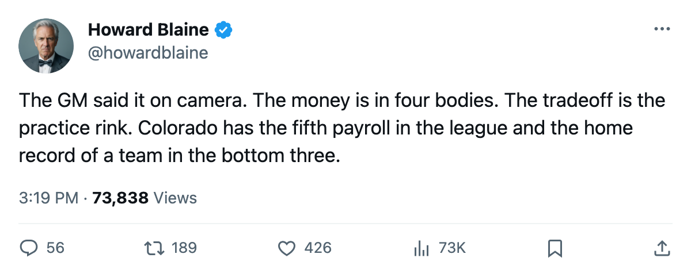
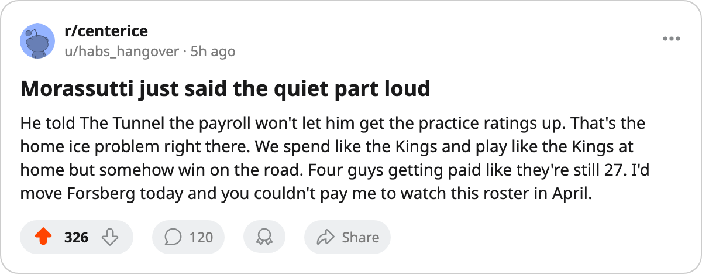

The Money Is in Four Bodies: Colorado Spends $66.38M and Sits 10th in the West
Kerry Morassutti told The Tunnel the payroll is locked. Forsberg, Kariya, Sakic and Hejduk are all playing. None of it is buying points.
 Howard BlaineSenior writer, The Blaine Rankings · The Hockey Gazette
Howard BlaineSenior writer, The Blaine Rankings · The Hockey Gazette
Kerry Morassutti sat in front of The Tunnel's Jan Kowalczyk on December 8 and described his payroll the way a man describes a diagnosis. "Four players account for a huge chunk of it and all four are playing well right now," the  Colorado Avalanche general manager said, naming
Colorado Avalanche general manager said, naming  Peter Forsberg89,
Peter Forsberg89,  Paul Kariya83 and
Paul Kariya83 and  Milan Hejduk82 before the sentence ran out. The fourth is Joe Sakic, rated 88 in the Bureau's Book. Colorado has spent $66.38M around those four and has 29 points, 10th in the Western Conference, 1 behind
Milan Hejduk82 before the sentence ran out. The fourth is Joe Sakic, rated 88 in the Bureau's Book. Colorado has spent $66.38M around those four and has 29 points, 10th in the Western Conference, 1 behind  Edmonton Oilers and
Edmonton Oilers and  Vancouver Canucks for the eighth seed.
Vancouver Canucks for the eighth seed.
The cost per point is $2.29M. Six clubs spend more per point:  Washington Capitals at $2.59M,
Washington Capitals at $2.59M,  San Jose Sharks at $2.55M,
San Jose Sharks at $2.55M,  Los Angeles Kings at $2.54M,
Los Angeles Kings at $2.54M,  Phoenix Coyotes at $2.52M,
Phoenix Coyotes at $2.52M,  Ottawa Senators at $2.47M and
Ottawa Senators at $2.47M and  Chicago Blackhawks at $2.44M. Five of those six are in the bottom five of their conference. Colorado is not. It has the fifth-largest payroll in the league, the 10th-best record, and a general manager who told a national audience that the structural problem is visible from the press box.
Chicago Blackhawks at $2.44M. Five of those six are in the bottom five of their conference. Colorado is not. It has the fifth-largest payroll in the league, the 10th-best record, and a general manager who told a national audience that the structural problem is visible from the press box.
The Forsberg contract is the hinge
Forsberg carries $9.90M with 1 year left. He is 32, 22.3 minutes a night, 32 points in 27 games. That is a 97-point pace over 82, which would be a fine season for most players in this league. It is not what $9.90M is supposed to buy. Last season he had 60 goals, 69 assists and 129 points in 82 games, good enough for fourth in the league in scoring.
The Bureau's Development Index has Forsberg below his base grade of 97, putting him at 95 today. Ninety-five is still among the highest overalls in this league, tied with  Marty Turco95. But the Index is a form measure, and the form says a man earning $9.90M is not quite the player the contract assumes. Hejduk, by comparison, has 32 points in 27 games at 88 overall and, per Morassutti's own accounting, a salary of $2.50M. "Hejduk at $2.50M for a 29-year-old putting up 32 points, that's the one that makes the math work," Morassutti said. "That's the first call I make, and it's not a close one."
Marty Turco95. But the Index is a form measure, and the form says a man earning $9.90M is not quite the player the contract assumes. Hejduk, by comparison, has 32 points in 27 games at 88 overall and, per Morassutti's own accounting, a salary of $2.50M. "Hejduk at $2.50M for a 29-year-old putting up 32 points, that's the one that makes the math work," Morassutti said. "That's the first call I make, and it's not a close one."
The GM was answering a hypothetical about which piece he would move first. The fact that he named the cheapest one, and the fact that he named him so quickly, is the story. The expensive pieces are the ones he wants to keep. Forsberg, Kariya at 30 points in 27 games and Sakic are the players who carry the payroll and the production. Hejduk carries the production without the payroll, and the GM has told the league which one he would sacrifice.
The Northwest is tight and Colorado is in the middle of it
| Club | GP | W | L | OTL | Pts | GF | GA | Home | Away | Payroll | Per Point |
|---|---|---|---|---|---|---|---|---|---|---|---|
 Calgary Flames Calgary Flames | 28 | 13 | 9 | 2 | 36 | 74 | 68 | 5-8 | 12-3 | $52.08M | $1.45M |
| Edmonton Oilers | 28 | 9 | 11 | 4 | 30 | 69 | 71 | 5-7 | 8-8 | $42.95M | $1.43M |
| Vancouver Canucks | 28 | 9 | 12 | 2 | 30 | 72 | 77 | 7-7 | 7-7 | $46.36M | $1.55M |
| Colorado Avalanche | 27 | 10 | 10 | 5 | 29 | 68 | 73 | 5-9 | 7-6 | $66.38M | $2.29M |
 Minnesota Wild Minnesota Wild | 28 | 7 | 12 | 4 | 28 | 75 | 75 | 5-10 | 7-6 | $52.07M | $1.86M |
Eight points separate first from fifth in the Northwest. The Calgary Flames Flames have spent $1.45M per point, the cheapest in the division and the second-cheapest in the league. Colorado has spent $2.29M per point, the most in the division and the seventh-most in hockey. Calgary has 4 fewer losses and 7 more points. The Flames' payroll is $52.08M. Colorado spends $14.30M more than Calgary and has 7 fewer points.
Morassutti acknowledged the gap in his own terms: "You don't spend $66.38M and walk away happy at 29. I'd be lying if I sat here and told you that number doesn't bother me." He also acknowledged that the money is the problem. "That's the entire problem. That's why we're at 29 and not at 35. Because that money is in four bodies and I've got to find a way to spread it."
Three road games in four days
Colorado plays at Vancouver Canucks on December 11, at Edmonton Oilers on December 13 and at Calgary Flames on December 14. The Avalanche are 7-6 on the road, the best away record in the division. At home they are 5-9, the worst.
The home-and-away split tracks the identity Morassutti described. "We're not finishing checks the way I want to, we're not holding our zone the way a team with our talent should," he told The Tunnel. "That's the workout room. That's the practice room. I'd love to get both to three tonight. I can't. The payroll won't let me."
The practical reading is that Colorado is a team that plays well in other buildings because the structure is the structure: four skilled players at the top, a supporting cast that holds the middle, a goaltender in  Jamie Storr79 rated 83 who gives up 2.43 a night. At home, the games that require the grinding the payroll cannot pay for are the ones Colorado loses. Five wins and nine losses in its own building is not a goaltending problem or a talent problem. It is the problem the GM described, and he described it to a camera.
Jamie Storr79 rated 83 who gives up 2.43 a night. At home, the games that require the grinding the payroll cannot pay for are the ones Colorado loses. Five wins and nine losses in its own building is not a goaltending problem or a talent problem. It is the problem the GM described, and he described it to a camera.
The Örnsköldsvik angle
Forsberg and  Markus Naslund91 were born 10 days apart in Örnsköldsvik, Sweden, played youth hockey on the same regional all-star team at 16, attended the same high school, and worked the same summer job at an electrical company at age 18. On December 11 they will be across the ice from each other in Vancouver. Naslund leads this league with 45 points in 28 games. Forsberg has 32 in 27. The gap is 13 points.
Markus Naslund91 were born 10 days apart in Örnsköldsvik, Sweden, played youth hockey on the same regional all-star team at 16, attended the same high school, and worked the same summer job at an electrical company at age 18. On December 11 they will be across the ice from each other in Vancouver. Naslund leads this league with 45 points in 28 games. Forsberg has 32 in 27. The gap is 13 points.
What matters is what $9.90M buys at 32, what 1 year left on a contract means when what the calendar has as the trade deadline is 98 days away, and what a general manager does when he has told a national audience that the money is in four bodies and none of them is going anywhere. Morassutti called Hejduk the first piece he would move. He did not call Forsberg.

